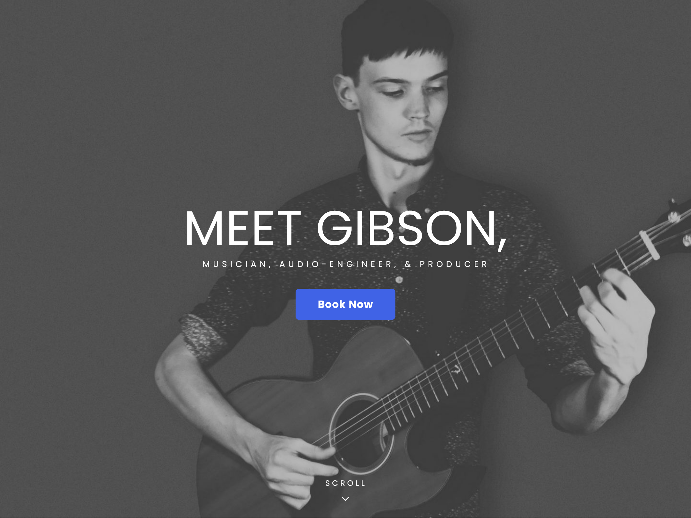
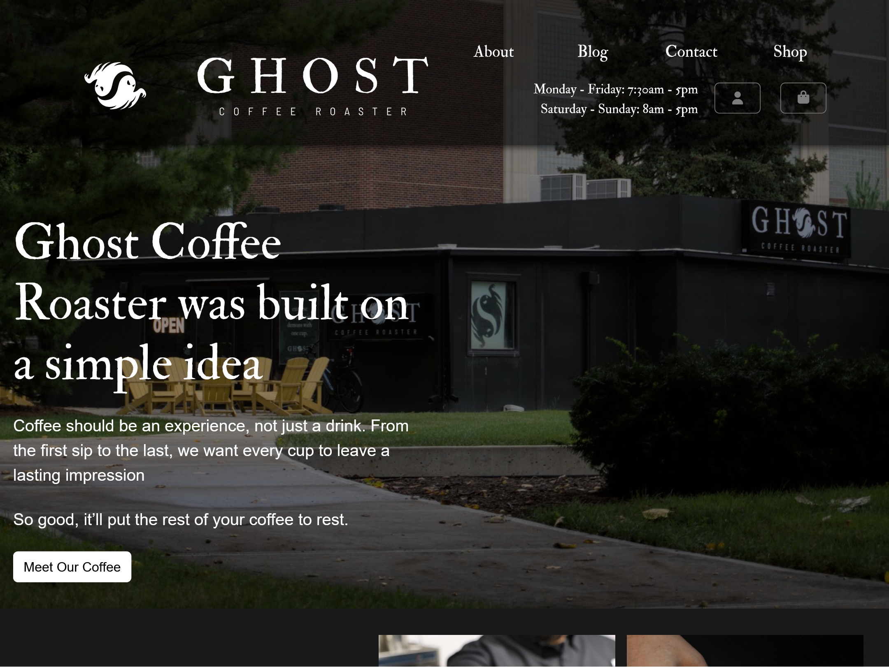

VITRO MEDIA LAB
Home
Contact
Live
sessions
transmitted in clarity.
Real-time technical logic and visual production.
Fig 1.0 — Live Transmission
Current Stream
ON AIR
SIGNAL LOST
Standby for Next Transmission
Fig 2.0 — Broadcast Archive
Previous Sessions

Production Session 04

Design Logic Live
Frontend Architecture